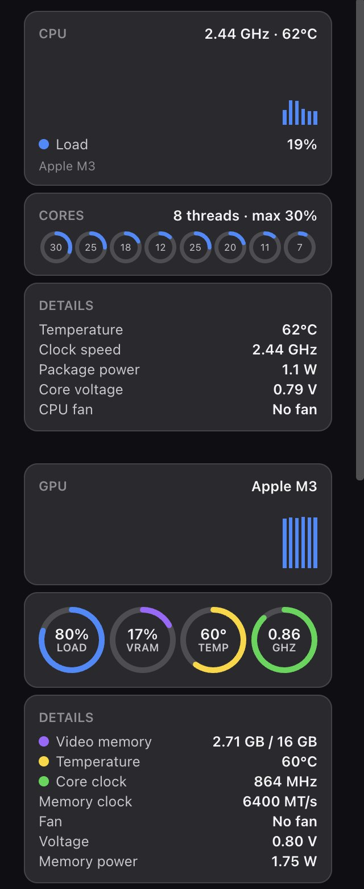
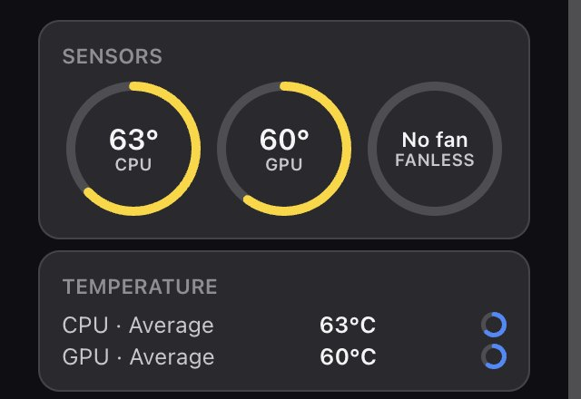

01
CPU, down to every thread
CPU load, per-core usage, temperature, clock speed, package power and core voltage.
Live CPU, GPU, memory, temperature, network and disk readings, right on your desktop. Float widgets anywhere or dock them in a sidebar. No clutter, no account.

From busy cores to background apps. Keep CPU temperature, GPU load and RAM usage in view without opening Task Manager or Activity Monitor.
CPU load, per-core usage, temperature, clock speed, package power and core voltage.
GPU usage, video memory, temperature, core and memory clock, with graphs and rings.
Used, available and committed RAM, plus the processes using the most memory.
CPU, GPU and motherboard temperatures and fan speeds. Fanless Macs say so.
Upload and download speed, traffic history, adapter status, local and public IP.
Free space on every drive, usage rings and live disk read and write activity.
Widen a widget to lay its sections out in columns. Pick Regular or Large.
Choose a theme per widget, set background opacity, or follow the app theme.
Weather, clocks, media and more. Mix them with your hardware widgets, on any monitor.
Actual widget UI with illustrative readings. Sensor availability depends on your hardware.
The same widgets, themes and sidebar, rebuilt for M-series Macs. DeskStats runs from the menu bar and reads real sensors without sudo, kernel extensions or extra drivers.


What each version can read. Exact sensors depend on your hardware.
| Reading | Windows 10 / 11 | macOS (Apple Silicon) |
|---|---|---|
| CPU load, per-core, clock | ✓ | ✓ |
| CPU & GPU temperature | ✓ | ✓ no sudo |
| Package power | ✓ | ✓ |
| Core voltage | ✓ supported boards | ✓ from DVFS tables |
| GPU load, clock, VRAM | ✓ | ✓ unified memory |
| Fan speed | ✓ | ✓ or “No fan” on Air |
| Motherboard sensors | ✓ | Not exposed by macOS |
| Network, storage, RAM | ✓ | ✓ |
| Lives in | System tray | Menu bar |
Add widget. Drag widgets anywhere, or choose Switch to Sidebar.Yes. DeskStats is free and open source under the GPLv3 license, on both Windows and macOS. There is no account, no ads and no telemetry.
Yes. The macOS version runs on Apple Silicon Macs (M1, M2, M3, M4 and M5) with macOS 11 Big Sur or later. It lives in the menu bar and shows CPU and GPU load, clocks, power, temperatures, core voltage, memory, network, storage and Now Playing. Intel Macs are not supported yet.
Yes. DeskStats reads CPU and GPU temperatures on Apple Silicon without sudo or extra drivers. MacBook Air has no fan, so DeskStats shows “No fan” instead of a fake 0 RPM reading.
DeskStats is free and isn't notarized by Apple, so the first launch needs one extra step: right-click the app → Open → Open, or go to System Settings → Privacy & Security → Open Anyway. Move the app into Applications first. Running it from Downloads makes macOS ask for folder access before it starts.
Windows 10 (version 2004 or later) and Windows 11, 64-bit. You do not need to install .NET.
Windows only lets apps read hardware sensors, such as CPU temperature, with elevated rights. The installer also adds the free, signed PawnIO driver (if it isn't already there) that DeskStats uses to read CPU sensors. Both are used only to read sensors.
No. There is no account, no analytics and no ads. Your hardware readings never leave your computer. Optional weather and public-IP features contact their providers. Update checks can be turned off in settings. Read the privacy policy.
Yes. Updates keep your widgets, sizes and screen positions. A fresh reinstall starts with hardware defaults and archives your previous layout.
DeskStats reads sensors through LibreHardwareMonitor and the PawnIO driver, like other well-known hardware monitors. Some antivirus programs are cautious about anything that talks to a hardware driver. Check the detection details and report a suspected false positive to your security vendor. Don't bypass a warning without looking into it.
Yes. DeskStats is a new take on the idea behind Sidebar Diagnostics, rebuilt as a widget platform with floating widgets, a docked sidebar, themes and a macOS version. It adapts parts of Sidebar Diagnostics' logic (GPLv3) and credits it below. It is not affiliated with the original project or its author.
Report bugs, ask questions or share ideas. GitHub issues are best for bugs, but a quick message works too.
Free to use, inspect and improve. Built in the open under GPLv3, with credit to the projects that made it possible.
Built with the help of open-source projects:
Free. Private. Open source. For Windows and Apple Silicon Macs.